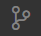
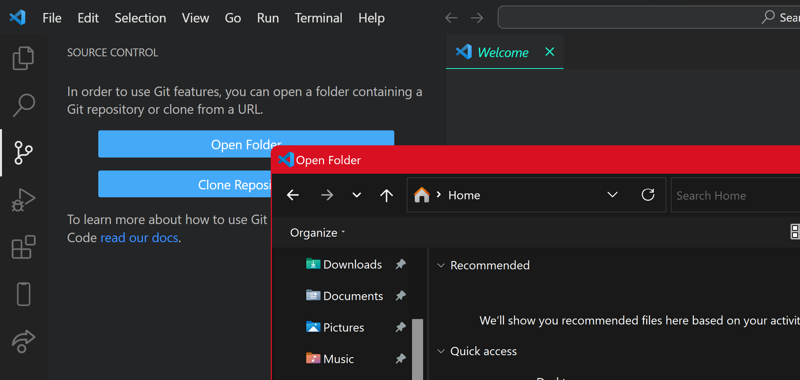
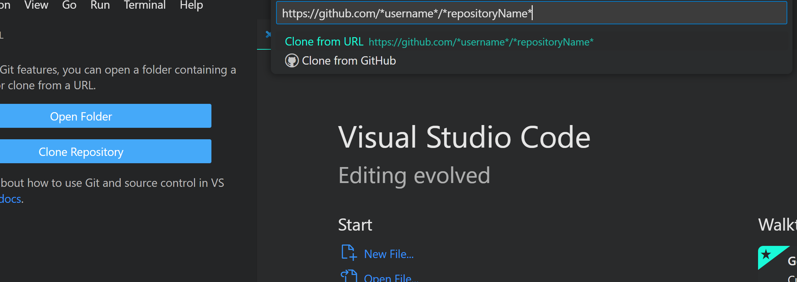

Creating and Cloning Repositories
< Previous Next >A repository is blah blah
In VS Code
You can create a repository by using a local folder in VS Code. First, access the Source Control Panel by clicking the  icon on the side bar or by using the shortcut Ctrl Shift G on Windows or Cmd Shift G on Mac. Then select Open Folder, this will open your file brower from which you can navigate to and select the folder you want to use.
If this folder does not already have a Git repository you can select the Initialize Repository button to create one and enable Git's source control features
To clone you repository in VS Code, access the Source Control Panel ( ) and select Clone Repository. Enter the URL of the repository you want to clone into the input menu, it should look similar to this: https://github.com/*username*/*repositoryName*. Alternitvely you can select Clone from GitHub and search within the repositories in your account.
Doing this will open your file explorer where you can navigate to the location you want to store the directory in.
On GitHub
To create a repository through the GitHub site, navigate to your dashboard on the GitHub webpage, click the plus dropdown in the top right corner and select New Repository and give it a name. You can then choose to make it public or private - to use github pages this must be public.

Using the terminal
Using Git in the terminal involves a series of commands to manage your code repository. Navigate to your project directory in your terminal to create a repository, run the command git init, to clone one run git clone [URL]